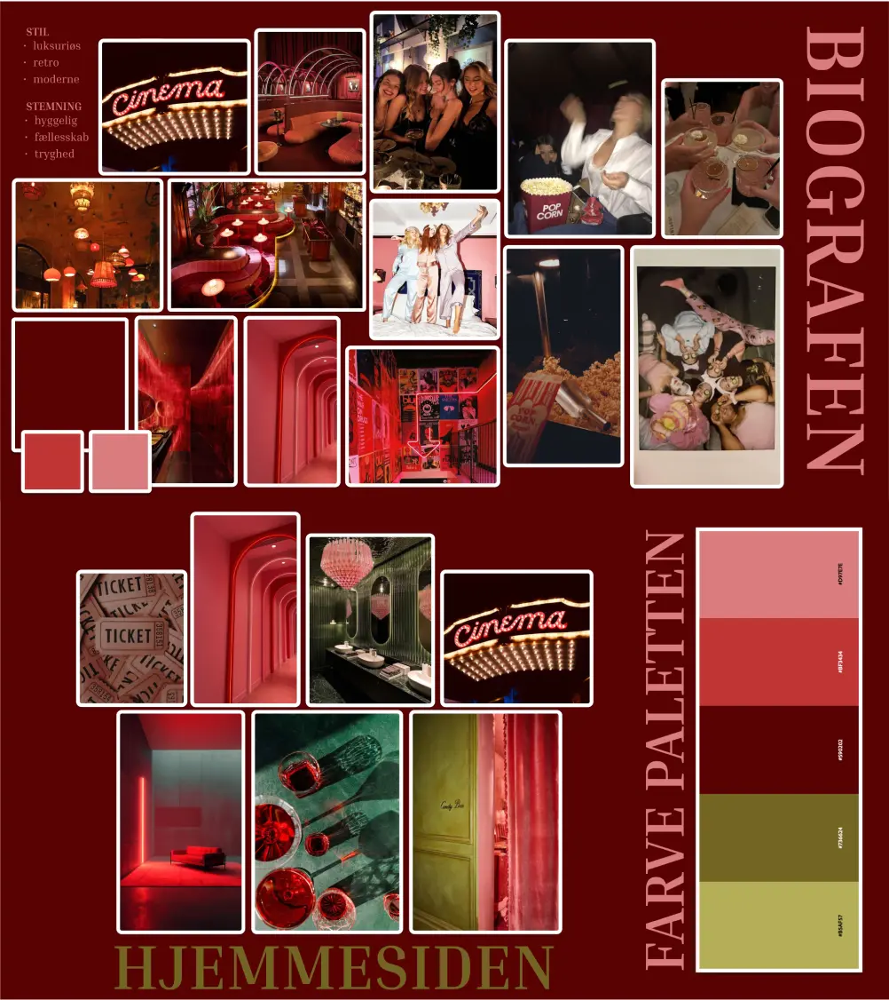
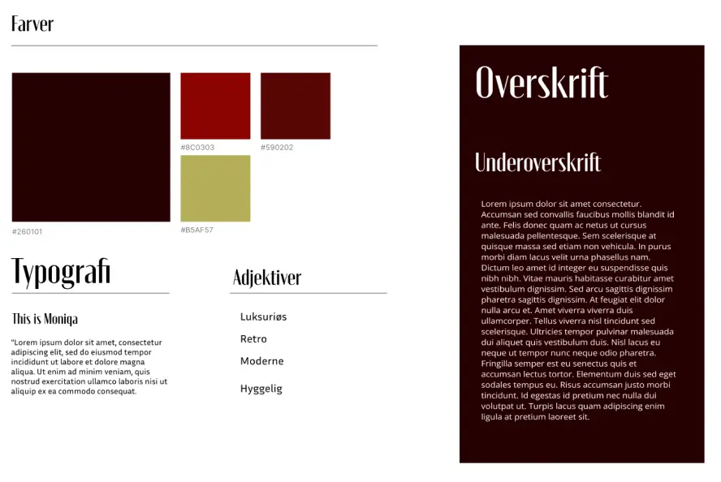
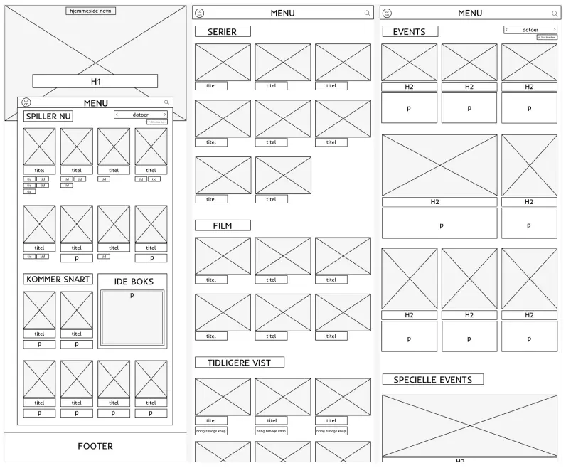
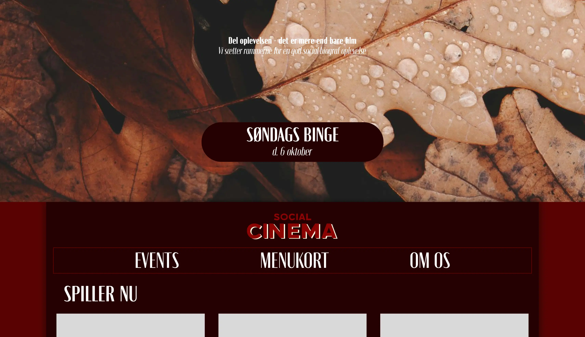

Fra ide til produkt
I tema 3 lærte vi om hele processen - lige fra første ide til færdigt produkt. Vi skulle kode vores egen hjemmeside, der omhandlede et emne vi selv valgte - jeg valgte en biograf.
Vi har arbejdet med brainstorm og mindmap. Desk research, interview og observation. Moodboards, styletiles og user stories. Vi har lært at lave vores egne wireframes og klikbarer prototyper, som vi kunne bruge til blandt andet at lave
squint-, 5 sekunders-, likert skala- og tænke højt test. Alle forskellige tests der gav os et indblik i hvad brugeren af vores hjemmeside tænkte og hvilke elementer der fungerede godt og dårligt.

På billedet ovenfor ses de to moodboards jeg lavede. Det ene var til hvordan jeg tænkte selve biografen skulle se ud/være, for at få en ide om hvilken stemning jeg ville skabe med hjemmesiden. Det andet var mere specifikt til hjemmesiden, hvor jeg også fandt frem til min farvepalette.

På billedet ovenfor ses mit styletile, som er en samling af de typografier, farver og beskrivende ord jeg vil bruge på min side.

På billedet ovenfor ses et udklip af den wireframe jeg lavede over de forskellige sider på min hjemmeside. Dette er en skabelon man kan arbejde ud fra, når man skal kode sit site, og udfylde med de rigtige billeder farver og tekst.

På billedet ovenfor ses et udklip af min forside på det færdigt kodede site. Ved at klikke ind på knappen med mit link, kan du se hele den færdige hjemmeside.
josefineyolanda.dk/emnesiteDesign for brugeren
Dette tema gav virkelig et godt indblik i, vigtigheden ved at huske på, at man altid designer til brugeren og at det er deres mening der i sidste ende er med til at afgøre om ens produkt er brugervenligt eller ej.
Jeg gik igennem mange forskellige ideer og design muligheder før jeg, med hjælp fra forskellige brugertests og andres inputs, endte med det endelige resultat.
Det var en vildt spændende projekt at blive kastet ud i og skulle finde ud af alt lige fra det første mindmap til den afsluttende kode. Det gav enormt god læring at prøve at stå med alle beslutninger selv.